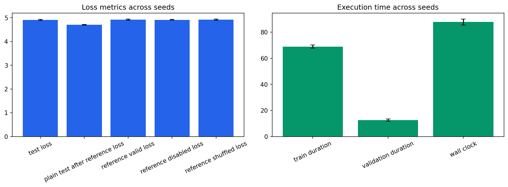

Seeds: [1, 7, 21, 42, 87]. Values are population mean +/- standard deviation.
| Test Loss | 4.91018 +/- 0.0246 |
|---|---|
| Test Perplexity | 135.706 +/- 3.34 |
| Plain Test After Reference Loss | 4.70616 +/- 0.00897 |
| Reference Valid Loss | 4.91957 +/- 0.0258 |
| Reference Disabled Loss | 4.91249 +/- 0.0213 |
| Reference Shuffled Loss | 4.92212 +/- 0.0227 |
| Train Duration Seconds | 68.9128 +/- 1.25 |
| Validation Duration Seconds | 12.5204 +/- 0.807 |
| Wall Clock Seconds | 87.7181 +/- 2.31 |
| Processed Tokens | 78610.8 +/- 78.4 |
